פשוט להצליח במתמטיקה › כל הנושאים › טריגונומטריה במישור
טריגונומטריה במישור – סרטוני הסבר ותרגול
48 סרטוני הסבר ותרגול בנושא טריגונומטריה במישור – לשאלון 471, שאלון 571. כל נושא מוסבר מהקל אל הקשה: קודם הרעיון, אחר כך תרגילים, ובסוף שאלות בסגנון בגרות. הכול בחינם, בשיטת "פשוט להצליח".
רוצים לעקוב אחרי ההתקדמות?נרשמים בחינם, וכל סרטון שראיתם מסומן ✓. ממשיכים מכל מכשיר.
הצטרפות בחינם ←טריגונומטריה במישור – שאלון 471 כל הנושאים של שאלון 471 ←
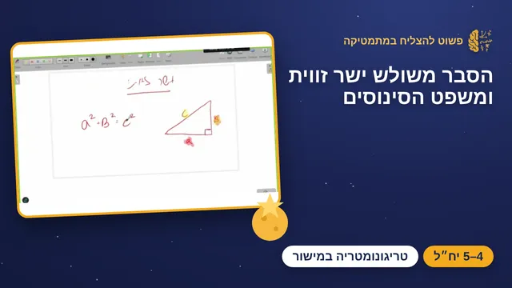
הסבר משולש ישר זווית ומשפט הסינוסים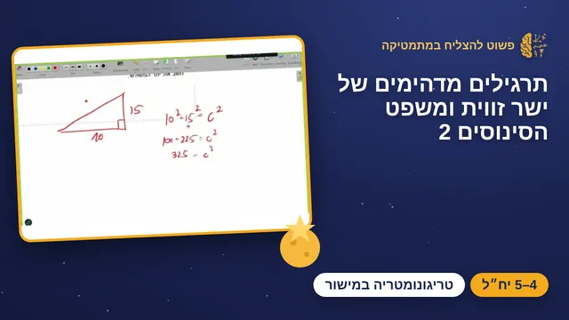
תרגילים מדהימים של ישר זווית ומשפט הסינוסים 2 תרגילים מדהימים של ישר זווית ומשפט הסינוסים 1תרגילים מדהימים של ישר זווית ומשפט הסינוסים 5
תרגילים מדהימים של ישר זווית ומשפט הסינוסים 1תרגילים מדהימים של ישר זווית ומשפט הסינוסים 5 תרגילים מדהימים של ישר זווית ומשפט הסינוסים 4
תרגילים מדהימים של ישר זווית ומשפט הסינוסים 4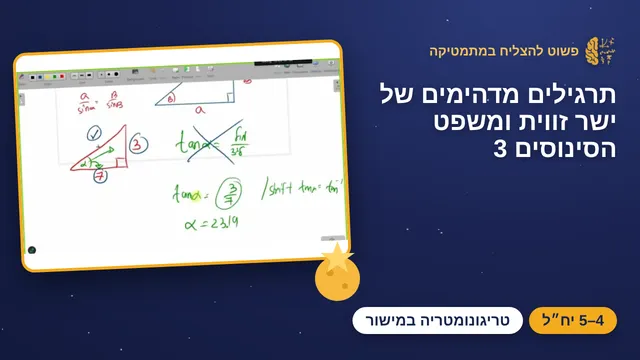
תרגילים מדהימים של ישר זווית ומשפט הסינוסים 3 משפט הקוסינוסים עם נעלמים
משפט הקוסינוסים עם נעלמים משולש ישר זווית – תרגילי טריגו בסיסיים sin cos tan כיתה י 1
משולש ישר זווית – תרגילי טריגו בסיסיים sin cos tan כיתה י 1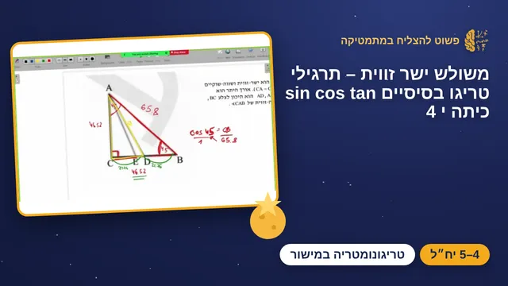
משולש ישר זווית – תרגילי טריגו בסיסיים sin cos tan כיתה י 4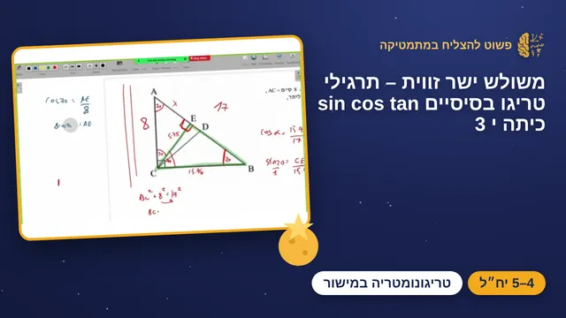
משולש ישר זווית – תרגילי טריגו בסיסיים sin cos tan כיתה י 3 משולש ישר זווית – תרגילי טריגו בסיסיים sin cos tan כיתה י 2
משולש ישר זווית – תרגילי טריגו בסיסיים sin cos tan כיתה י 2 הסבר משפט הסינוסים והקוסינוסים
הסבר משפט הסינוסים והקוסינוסים טריגונומטריה – מציאת זווית ואורך צלעות, הבסיס ועצות
טריגונומטריה – מציאת זווית ואורך צלעות, הבסיס ועצות טריגונומטריה – איך למצוא זווית ואורך צלעות עם sin cos tan
טריגונומטריה – איך למצוא זווית ואורך צלעות עם sin cos tan טריגונומטריה – איך משתמשים בסינוס, קוסינוס וטנגנס, שאלה פתורה
טריגונומטריה – איך משתמשים בסינוס, קוסינוס וטנגנס, שאלה פתורה טריגו – משפט הסינוסים, tan ושטח משולש: מתי משתמשים בכל משפטטריגו 481 – שאלת בגרות שמסכמת את כל החומר
טריגו – משפט הסינוסים, tan ושטח משולש: מתי משתמשים בכל משפטטריגו 481 – שאלת בגרות שמסכמת את כל החומר סיכום משפטי טריגונומטריה – סינוסים, קוסינוסים ושטח משולשטריגו עם גאומטריה – משפט הסינוסים והקוסינוסיםטריגונומטריה – משפט הסינוסים ו-tan: מציאת זוויות וצלעות 481שטח משולש – טריגונומטריה וגאומטריה 481
סיכום משפטי טריגונומטריה – סינוסים, קוסינוסים ושטח משולשטריגו עם גאומטריה – משפט הסינוסים והקוסינוסיםטריגונומטריה – משפט הסינוסים ו-tan: מציאת זוויות וצלעות 481שטח משולש – טריגונומטריה וגאומטריה 481 משפט הסינוסים – טריגונומטריה
משפט הסינוסים – טריגונומטריה טריגונומטריה – משפט הסינוסים כיתה י
טריגונומטריה – משפט הסינוסים כיתה י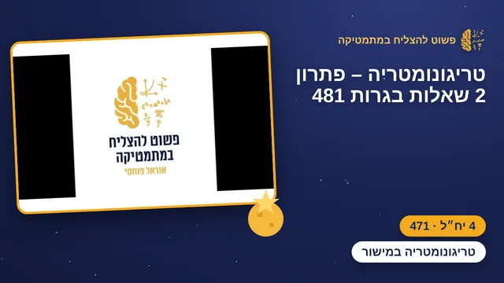
טריגונומטריה – פתרון 2 שאלות בגרות 481 2021 מועד א 481 – שאלה 5 טריגונומטריה, שאלת בגרות מלאה
2021 מועד א 481 – שאלה 5 טריגונומטריה, שאלת בגרות מלאה טריגו סיכום כיתה י
טריגו סיכום כיתה יטריגונומטריה במישור – שאלון 571 כל הנושאים של שאלון 571 ←
 הסבר טריגו כל הנוסחאות חשוב ביותר 5 יח (עותק)הסבר משולש ישר זווית ומשפט הסינוסיםתרגילים מדהימים של ישר זווית ומשפט הסינוסים 2תרגילים מדהימים של ישר זווית ומשפט הסינוסים 1תרגילים מדהימים של ישר זווית ומשפט הסינוסים 5תרגילים מדהימים של ישר זווית ומשפט הסינוסים 4תרגילים מדהימים של ישר זווית ומשפט הסינוסים 3
הסבר טריגו כל הנוסחאות חשוב ביותר 5 יח (עותק)הסבר משולש ישר זווית ומשפט הסינוסיםתרגילים מדהימים של ישר זווית ומשפט הסינוסים 2תרגילים מדהימים של ישר זווית ומשפט הסינוסים 1תרגילים מדהימים של ישר זווית ומשפט הסינוסים 5תרגילים מדהימים של ישר זווית ומשפט הסינוסים 4תרגילים מדהימים של ישר זווית ומשפט הסינוסים 3 הסבר טריגו כל הנוסחאות חשוב ביותר 5 יח
הסבר טריגו כל הנוסחאות חשוב ביותר 5 יח תרגילי טריגו עם משפט הקוסינוסים 5 יח 3
תרגילי טריגו עם משפט הקוסינוסים 5 יח 3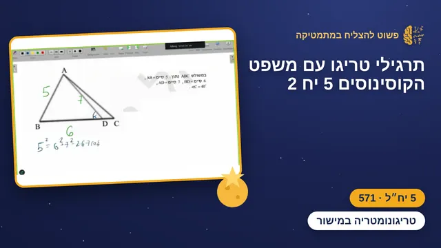
תרגילי טריגו עם משפט הקוסינוסים 5 יח 2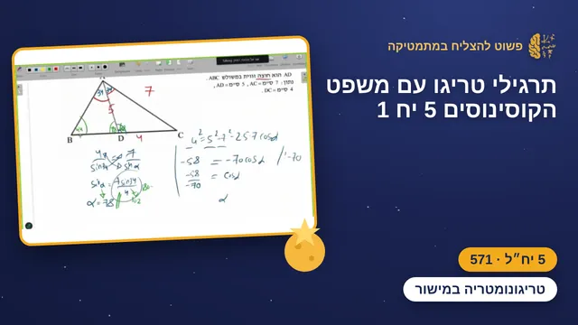
תרגילי טריגו עם משפט הקוסינוסים 5 יח 1משפט הקוסינוסים עם נעלמים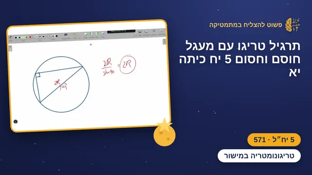
תרגיל טריגו עם מעגל חוסם וחסום 5 יח כיתה יא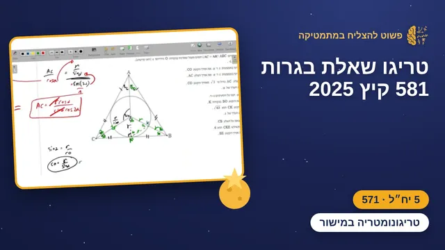
טריגו שאלת בגרות 581 קיץ 2025משולש ישר זווית – תרגילי טריגו בסיסיים sin cos tan כיתה י 1משולש ישר זווית – תרגילי טריגו בסיסיים sin cos tan כיתה י 4משולש ישר זווית – תרגילי טריגו בסיסיים sin cos tan כיתה י 3משולש ישר זווית – תרגילי טריגו בסיסיים sin cos tan כיתה י 2 טריגו 571 שאלת בגרות
טריגו 571 שאלת בגרות טריגו 806 שאלות ברמת בגרות ומעבר 1
טריגו 806 שאלות ברמת בגרות ומעבר 1 טריגו 806 שאלות ברמת בגרות ומעבר 2
טריגו 806 שאלות ברמת בגרות ומעבר 2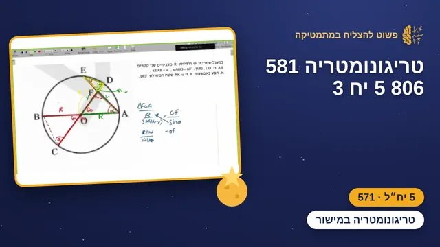
טריגונומטריה 581 806 5 יח 3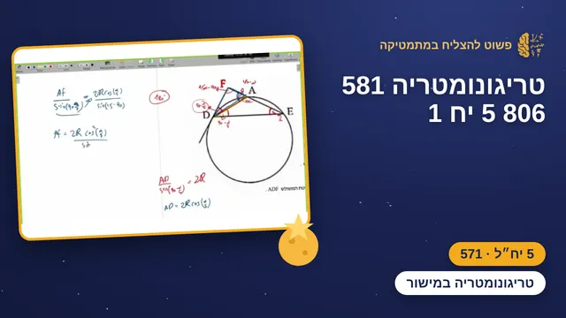
טריגונומטריה 581 806 5 יח 1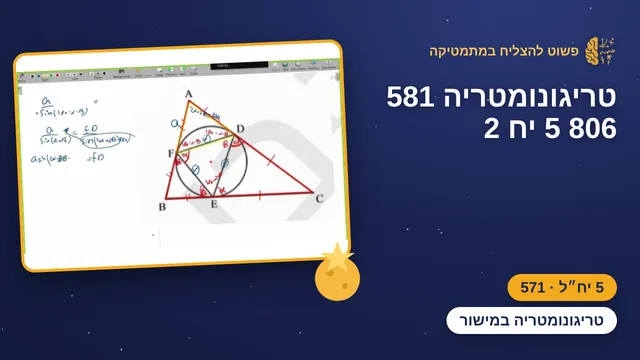
טריגונומטריה 581 806 5 יח 2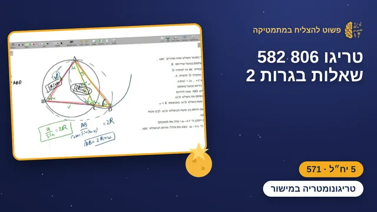
טריגו 806 582 שאלות בגרות 2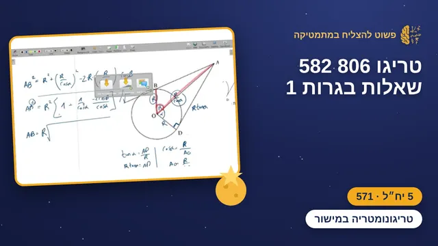
טריגו 806 582 שאלות בגרות 1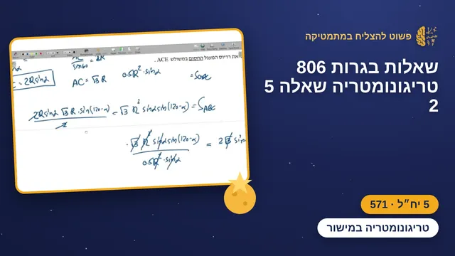
שאלות בגרות 806 טריגונומטריה שאלה 5 2 שאלות בגרות 806 טריגונומטריה שאלה 5 1
שאלות בגרות 806 טריגונומטריה שאלה 5 1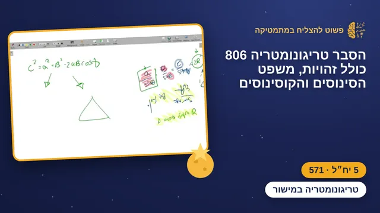
הסבר טריגונומטריה 806 כולל זהויות, משפט הסינוסים והקוסינוסיםהסבר משפט הסינוסים והקוסינוסיםטריגונומטריה – מציאת זווית ואורך צלעות, הבסיס ועצותטריגונומטריה – איך למצוא זווית ואורך צלעות עם sin cos tanטריגונומטריה – איך משתמשים בסינוס, קוסינוס וטנגנס, שאלה פתורהטריגו – משפט הסינוסים, tan ושטח משולש: מתי משתמשים בכל משפט שאלת טריגו 5 יח שאלת בגרות 581 – שאלה מדהימהטריגו עם הבעות של כמה נעלמים – רמה גבוהה כיתה י 5 יחסיכום משפטי טריגונומטריה – סינוסים, קוסינוסים ושטח משולשטריגו עם גאומטריה – משפט הסינוסים והקוסינוסיםמשפט הסינוסים – טריגונומטריהטריגונומטריה – משפט הסינוסים כיתה י
שאלת טריגו 5 יח שאלת בגרות 581 – שאלה מדהימהטריגו עם הבעות של כמה נעלמים – רמה גבוהה כיתה י 5 יחסיכום משפטי טריגונומטריה – סינוסים, קוסינוסים ושטח משולשטריגו עם גאומטריה – משפט הסינוסים והקוסינוסיםמשפט הסינוסים – טריגונומטריהטריגונומטריה – משפט הסינוסים כיתה י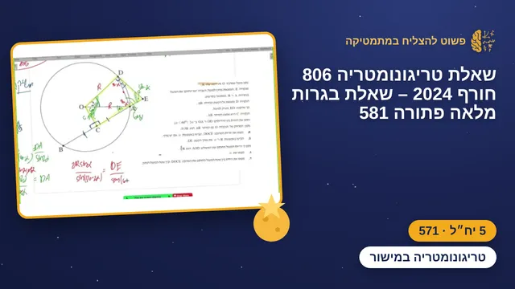
שאלת טריגונומטריה 806 חורף 2024 – שאלת בגרות מלאה פתורה 581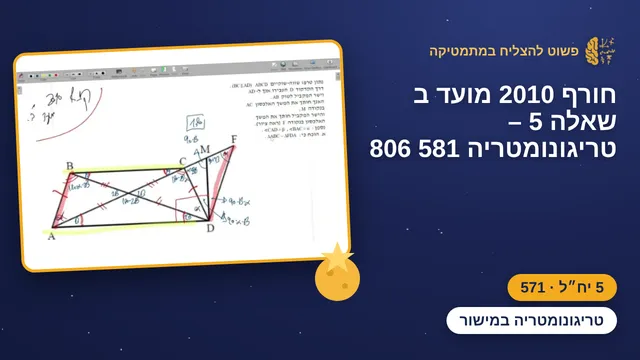
חורף 2010 מועד ב שאלה 5 – טריגונומטריה 581 806טריגו סיכום כיתה י